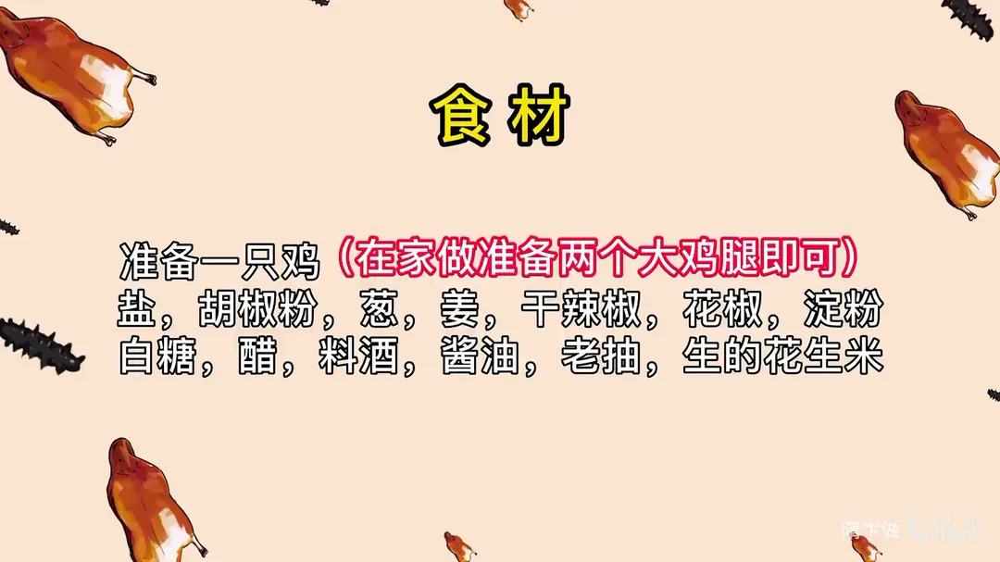
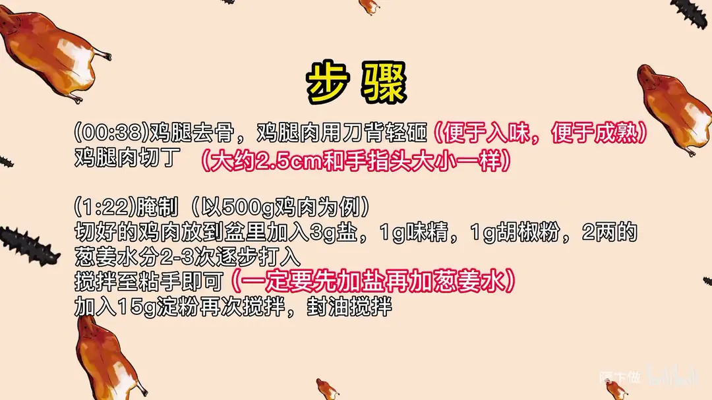
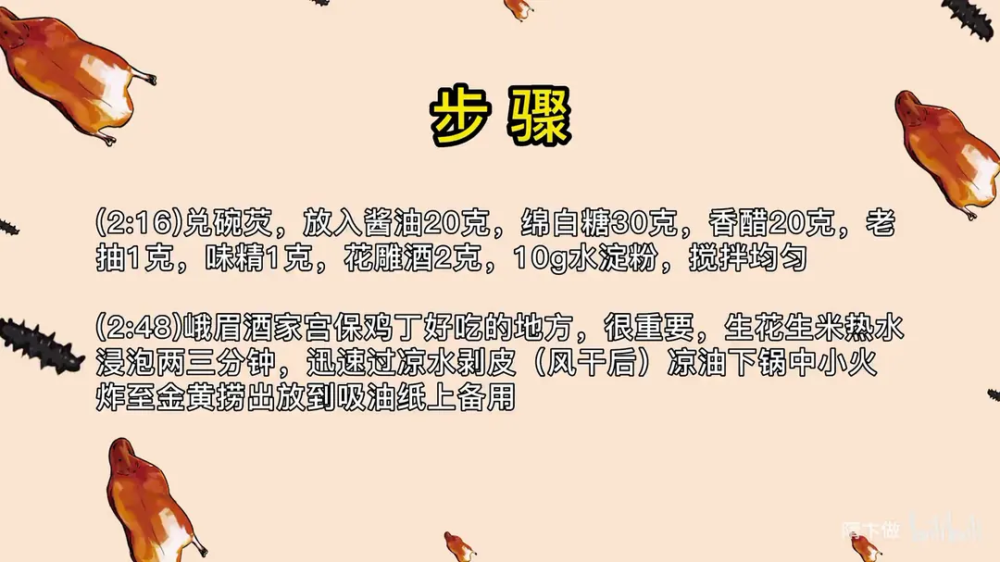
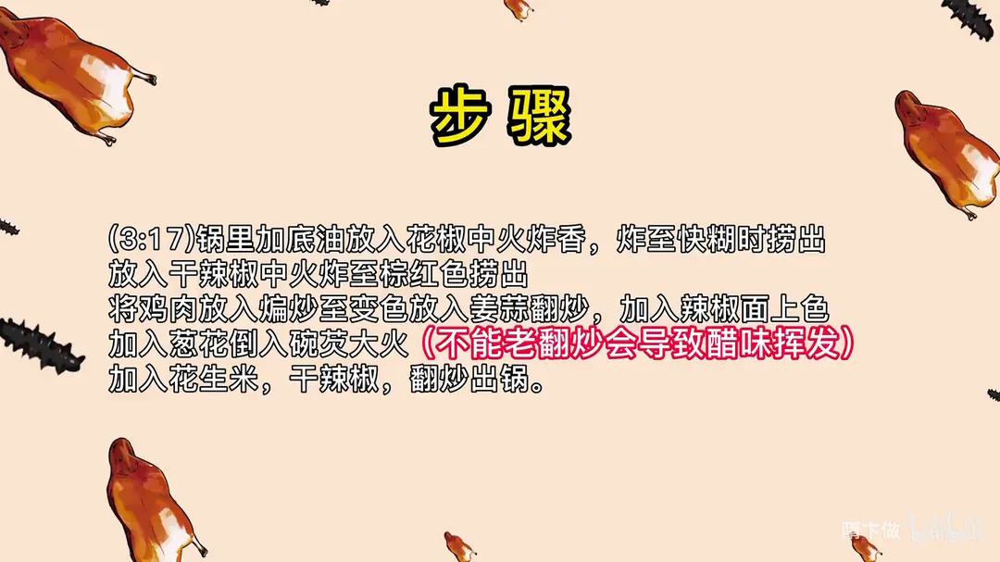
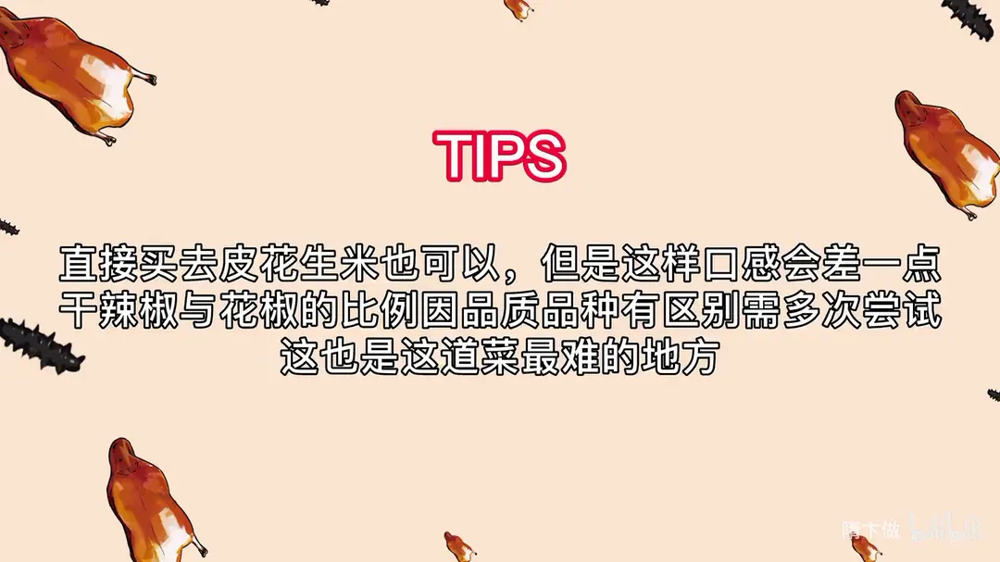

宫保鸡丁
隋卞一做。整鸡或两个大鸡腿，去骨轻砸后切丁，先加盐再分次打入葱姜水，兑一碗芡汁大火快炒，讲究的是干辣椒与花椒的比例。
原视频：https://www.bilibili.com/video/BV1bo4y187SW
食材
鸡、盐、味精 等 19 样
| 类别 | 用料 | 用量 |
|---|---|---|
| 主料 | 鸡 | 一只（在家做准备两个大鸡腿即可） |
| 腌制 | 盐 | 3g（以 500g 鸡肉为例） |
| 腌制 | 味精 | 1g |
| 腌制 | 胡椒粉 | 1g |
| 腌制 | 葱姜水 | 2 两 |
| 腌制 | 淀粉 | 15g |
| 碗芡 | 酱油 | 20g |
| 碗芡 | 绵白糖 | 30g |
| 碗芡 | 香醋 | 20g |
| 碗芡 | 老抽 | 1g |
| 碗芡 | 味精 | 1g |
| 碗芡 | 花雕酒 | 2g |
| 碗芡 | 水淀粉 | 10g |
| 炒制 | 花椒 | 适量 |
| 炒制 | 干辣椒 | 适量 |
| 炒制 | 姜蒜 | 适量 |
| 炒制 | 葱 | 适量 |
| 炒制 | 辣椒面 | 适量 |
| 炒制 | 生的花生米 | 适量 |
步骤
- 去骨改刀：鸡腿去骨，鸡腿肉用刀背轻砸，便于入味、便于成熟；鸡腿肉切丁，大约 2.5cm，和手指头大小一样。
- 腌制：以 500g 鸡肉为例，切好的鸡肉放到盆里，加入 3g 盐、1g 味精、1g 胡椒粉，2 两葱姜水分 2-3 次逐步打入，搅拌至粘手即可，一定要先加盐再加葱姜水；加入 15g 淀粉再次搅拌，封油搅拌。
- 兑碗芡：放入酱油 20 克、绵白糖 30 克、香醋 20 克、老抽 1 克、味精 1 克、花雕酒 2 克、10g 水淀粉，搅拌均匀。
- 炸花生米：生花生米热水浸泡两三分钟，迅速过凉水剥皮，风干后凉油下锅，中小火炸至金黄，捞出放到吸油纸上备用。
- 炸香料：锅里加底油放入花椒中火炸香，炸至快糊时捞出；放入干辣椒中火炸至棕红色捞出。
- 煸炒鸡丁：将鸡肉放入煸炒至变色，放入姜蒜翻炒，加入辣椒面上色，加入葱花。
- 烹芡出锅：倒入碗芡大火快炒，不能老翻炒、会导致醋味挥发；加入花生米、干辣椒，翻炒出锅。
小贴士
- 直接买去皮花生米也可以，但是这样口感会差一点。
- 干辣椒与花椒的比例因品质品种有区别，需多次尝试，这也是这道菜最难的地方。
讲解要点
难度：★★★★☆（碗芡比例固定，真正难的是按辣椒花椒品质调比例，以及碗芡下锅后的火候与翻动）
为什么这么做
- 去骨后用刀背轻砸：砸断表面纤维、把肉拍松，腌料进得去，炒时也熟得匀。
- 先加盐再加葱姜水、分两三次打入：盐让肉里的蛋白质产生黏性，水才吃得进去；一次倒太多就变成「泡水」，炒出来出水、脱浆。
- 葱姜水打到粘手为止：这部分水是鸡肉嫩度的来源，打不进去，成菜就只能靠汁水掩盖干柴。
- 淀粉 15g 打薄浆、最后封油：薄浆炒时能上色不粘锅，浆厚难散；封一层油隔开肉丁，下锅才不粘连。
- 花生米热水泡后过凉再剥皮：热胀使皮起皱，冷激后一捏就脱；带皮炸会发苦，剥皮炸才酥脆香。
- 凉油下花生米、中小火炸：油温升高慢，花生内部水分能慢慢跑掉，从里到外一起酥，不会外糊内生。
- 花椒炸到快糊捞出、辣椒炸到棕红捞出：香味已在油里，渣留在锅里继续加热就会发苦，所以捞出来、最后再回锅。
- 鸡丁趁花椒辣椒的香油煸炒：油里已经全是香料味，肉丁在这一步把味道吸进去，而不是只挂表面一层糖醋味。
- 碗芡大火快炒、不能反复扒拉：大火让芡汁迅速收紧、裹亮肉丁；翻太多、炒太久，醋香跑光，只剩死甜。
- 干辣椒最后回锅：这时辣椒的脆度还在，成菜里每一段辣椒都是脆的。
容易翻车
- 干辣椒与花椒的比例没法照抄，品种、粗细、鸡肉多少都影响，只能少量多次试出来。
- 葱姜水一次加太多，鸡肉「打水过头」，炒的时候整个脱浆。
- 花椒、辣椒在锅里停留太久，油会发苦，整道菜就毁了。
- 碗芡下锅后一直扒拉、火不够旺，芡不亮，醋香也全跑了。
原片尾卡





原片文案
AI 字幕校准稿
以前吃过的宫保鸡丁好像都不太行，我只能说，宫保鸡丁没有那么好做。在北京，宫保鸡丁的翘楚就是峨嵋酒家，今天给你们做峨嵋酒家版本的宫保鸡丁。外地的小伙伴，特别是四川的，你们看看跟你们从小吃到的到底有什么区别。
很巧的是，我年轻的时候管理过峨嵋。咱们先来只鸡，我刚才把鸡脚都去了。腿取下来，还有一个关节掐住了，一扯就下来了。两个鸡腿基本上就够出一份了，扒开刀一擀，一扯就行了。
然后用刀背轻轻砸一下，便于入味、也便于成熟，然后切成丁，大约两厘米半左右，两厘米半到三厘米，跟我手指头差不多。切好的鸡肉放到盆里，加盐、胡椒粉、葱姜水搅拌均匀。一定要先加盐，然后再加葱姜水，放了盐之后产生那种物理反应，才吃得进葱姜水。酒店做饭可能会打得多一点，为了出成率高，咱们家里边做基本上二两多就差不多了。让水不能再往进打了，手摸着黏糊糊的就差不多了。然后加淀粉，淀粉不能放太多，多了以后一下锅不好散开，但为了保持水分又不能不加，看表面挂一层很薄的淀粉。最后封底油，表面亮亮的就行了。
我们来兑碗芡：白糖、醋、料酒、酱油、老抽，放点水淀粉。你看谁炒菜还兑碗芡，那你就对他说：嚯，你这个菜对芡还真有讲究——那个人肯定看你一眼，这小子肯定是个高手。
宫保鸡丁没花生米不行。花生米我在峨嵋酒家吃的时候特别好吃，酥脆香，为什么呀？就这一步——一定要把热水倒进去，泡两三分钟，皮就慢慢起皱了，这会儿过凉水，一捏就出来了，特别好剥。直接买去皮花生米也行，但绝对没有自己剥的这个炸出来香。花生米凉油下锅炸，里边的水分慢慢都跑出来，到这个颜色就行了，搁到吸油纸上。
锅里边留底油，放入花椒，花椒放多少跟花椒的品质、还有鸡肉的多少有很大关系。炸到花椒要糊的时候把它捞出来，再下干辣椒，炸到棕红色捞出来。上好浆的鸡肉搁在锅里边，这样煸炒的时候，花椒味、干辣椒味，所有的味道都会浸到鸡肉里去。这跟外边有些馆子吃的那个只有表面近似糖醋味、往里一嚼越嚼越没味的，就差在这儿。鸡肉变色以后把姜蒜放进去，炒熟之后倒入辣椒面，主要是上色用，再把葱倒进去。
然后倒入碗芡，开大火，不能死扒拉它，老扒拉它，那醋味全挥发了。把花生米倒进去，芡粘稠了以后，再把干辣椒倒进去——这会儿才放干辣椒，您吃里边所有干辣椒都是脆的。好了，出锅了。
这个味道没那么甜，也没那么酸，就很小很小的一点点酸甜，主要就是辣、麻。鸡肉特别嫩，跟鸡皮下面那个脂肪又特别融合，这个口味是丰富、平衡的，非常复合，每一个味道相互都不抢。就算碗汁给你，你也做不出这个样子。味道就是干辣椒、花椒整体搭配出来的，不同的辣椒可能放的量不一样，所以这个需要很细很细地去学。这跟北京饭店那个不一样，那个是出锅烹醋，闻着醋香、吃不出醋味，两种概念。